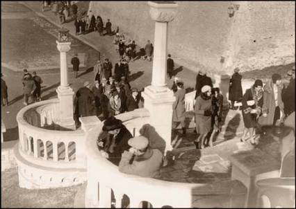
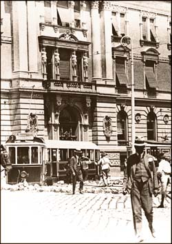

Beogradski privatni život
Ciklus: ISTORIJA PRIVATNOG ŽIVOTA NA NAŠIM PROSTORIMA U XX VEKU I DINAMIKA DISKONTINUITETA
"Stanovanje i privatnost", predavač dr Sreten Vujović, profesor univerziteta
Kolarac, 28. mart
***
OK, ja pratim šta se dešava u kulturi Beograda. (Pratim, što ne znači da učestvujem). Te sam tako znala i za ovaj ciklus predavanja, a takođe mi je rečeno da su knjige koje se bave generalno ovom temom, a pojedinačnim aspektima i ranijim periodima (i izdaje ih Clio) veoma dobre. Ali kad sam videla ovu interesantnu temu, rešila sam i da najzad odem. [Moram reći da generalno ne preporučujem predavanja na Kolarcu i sličnim institucijama ako vas tema ne interesuje izuzetno, na osnovu svog maximalno ograničenog iskustva, ne zato što su predavanja loša već zato što je ekipa i atmosfera uvek vrlo čudna, zašto je to tako već je druga priča].
Elem, tema je bila stanovanje i privatnost u Beogradu u prvoj polovini XX veka.
Neki bitni datumi za istoriju Beograda s kraja XIX i iz prve polovine XX veka:
1867 Na Kalemegdanu, Turski komadant Ali-Riza pasha predaje ključeve grada Knjazu
Mihajlu. Turci napokon napuštaju Beograd.
1878 Srbija dobija nezavisnost na Berlinskom Kongresu.
1882 Srbija proglašena Kraljevinom, Beograd prestonica.
1883 Prvi telefoni U Beogradu
1884 Sagrađena je železnička stanica i železnički most preko Save.
1892 Prvi vodovod pušten u rad u Beogradu
1893 Električno osvetljenje
1894 Prvi električni tramvaj
1903 Majski prevrat – nakon atentata na Kralja Aleksandra Obrenovića, Petar I
Karađorđević preuzima presto.
1914 Austrijanci bombarduju i zauzimaju Beograd, ali ga Srbi iste godine oslobađaju.
1915 Nemačke i Austrijske snage pod komandom generala Mackensena zauzimaju
Beograd
1918 Beograd postaje pretonica Kraljevine SHS
1923 Avio linija Pariz – Budimpešta proširena da obuhvati Beograd - Pariz
1926 Kralj Aleksandar I Karađorđević ukida parlament i uvodi diktaturu.
1927 Otvoroen beogradski aerodrom
1929 Radio Beograd počeo sa emitovanjem
1935 Otvoren Pančevački most – prvi most preko Dunava.
1937 Otvoren Beogradski sajam.
1941 27. marta održani protesti protiv Jugoslovenskog pristupanja Trojnom paktu. Nemci
bombarduju Beograd 6. aprila a zauzimaju ga 12. aprila.
Sa sajta Singidunum.
Ceo XX vek stanovanje u Beogradu obeleženo je manjkom stambenog prostora, na šta su zantnim delom uticali i ratovi u kojima je Srbija uticala, bilo ih je pet, ako se svi ratovi 90ih računaju kao jedan. Tako je tokom Prvog svetskog rata porušeno oko 600 kuća, što je činilo oko deset posto ukupnog broja.
U periodu između dva rata dolazi do groznice gradnje. Generalni urbanistički plan usvojen je 1923. godine.
Osnovni tip gradnje činile su slobodnostojeće gospodse kuće, male kuće sa stanovima od obično samo dve prostorije za siromšne i, kasnije, kuće na sprat, koje su obično u prizemlju imale zanatske ili trgovačke radnje.
Vile su najpre (do 1913. godine) podignute u Krunskoj i Knez Miloševoj ulici, a kasnije počinju da se prave i na Dedinju i Senjaku.
***
Uspostavljanje prvih beogradskih salona značilo je preklapanje privatnog i javnog života. Uzori za njihovo uređivanje bili su dvor Karađorđevića i strani uticaji, aktuelni i stariji.Književno-umetnički saloni su stigli iz Francuske, a preko srednje Evrope.
Građanski stanovi Beograda tog doba četo su ličili i na starinarnice: Glomazan orahov nameštaj, teški bronzani lusteri, staro srebro i kristal.
Skoro svaka viđenija gospođa je imala i svoj dan kada je primala posete.
Dobar društveni status nije se mogao ni zamisliti bez bar jedne dvojke za pomoć u kući. Sama posluga svoj privatni život i nije imala, on se mešao i stapao sa privatnim životom gospode kod koje su radili.
Fotografije (Kalemegdan 1930. i Pozorišni trg 1927) su sa ovog sajta
O Beogradu nekad smo već pisali. Nastaviće se...
 RSS feed
RSS feed
 sadržaji se objavljuju pod
sadržaji se objavljuju pod
Komentari
Zbog tehničkih problema komentari stigli do početka jula 2007. su sada u okviru teksta
Yahti | 02.08.07 13:11